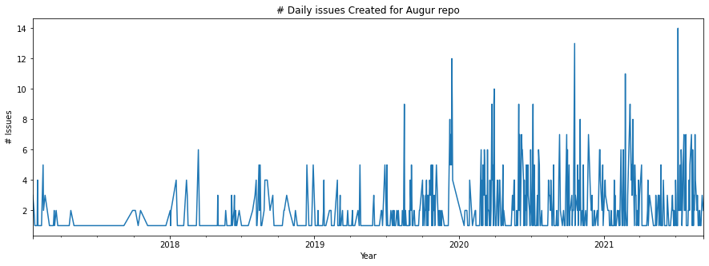
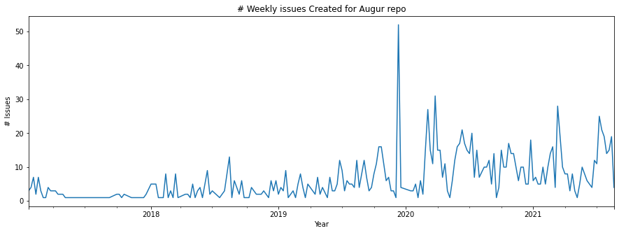
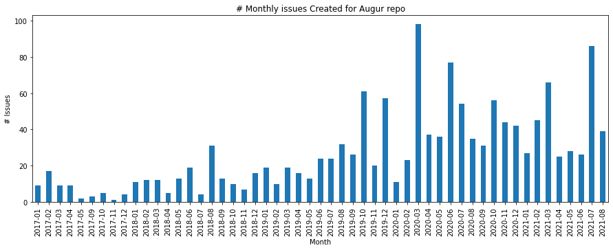
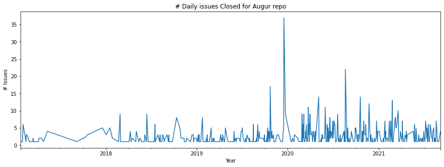
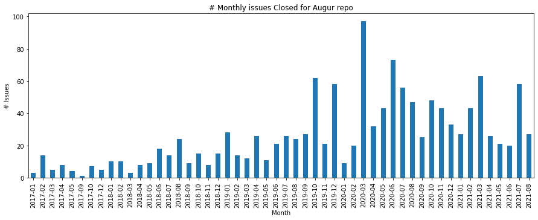

Github Activity Metrics-Issues¶
Activity by Repo
This notebook will aim to query the Augur DB to access the neccessary information to be able to get the following issue metrics dirived from the GitHub Community Metrics working document https://docs.google.com/document/d/1Yocr6fk0J8EsVZnJwoIl3kRQaI94tI-XHe7VSMFT0yM/edit?usp=sharing
Any necessary computations from the data to get the metric value will be done as the queries are determined
import psycopg2
import pandas as pd
import sqlalchemy as salc
import json
import os
import matplotlib.pyplot as plt
plt.rcParams['figure.figsize'] = (15, 5)
with open("../config_temp.json") as config_file:
config = json.load(config_file)
database_connection_string = 'postgresql+psycopg2://{}:{}@{}:{}/{}'.format(config['user'], config['password'], config['host'], config['port'], config['database'])
dbschema='augur_data'
engine = salc.create_engine(
database_connection_string,
connect_args={'options': '-csearch_path={}'.format(dbschema)})
#add your repo name(s) here of the repo(s) you want to query if known (and in the database)
repo_name_set = ['augur', 'grimoirelab']
repo_set = []
for repo_name in repo_name_set:
repo_query = salc.sql.text(f"""
SET SCHEMA 'augur_data';
SELECT
b.repo_id
FROM
repo_groups a,
repo b
WHERE
a.repo_group_id = b.repo_group_id AND
b.repo_name = \'{repo_name}\'
""")
t = engine.execute(repo_query)
repo_id =t.mappings().all()[0].get('repo_id')
repo_set.append(repo_id)
print(repo_set)
[25440, 25448]
#Take this out of quotes if you want to manually assign a repo_id number(s)
#repo_set = [25440]
Gather and Process Data¶
Query¶
df_issues = pd.DataFrame()
for repo_id in repo_set:
pr_query = salc.sql.text(f"""
SELECT
r.repo_name,
i.issue_id AS issue,
i.gh_issue_number AS issue_number,
i.gh_issue_id AS gh_issue,
i.created_at AS created,
i.closed_at AS closed
FROM
repo r,
issues i
WHERE
r.repo_id = i.repo_id AND
i.repo_id = \'{repo_id}\'
""")
df_current_repo = pd.read_sql(pr_query, con=engine)
df_issues = pd.concat([df_issues, df_current_repo])
df_issues = df_issues.reset_index()
df_issues.drop("index", axis=1, inplace=True)
df_issues
| repo_name | issue | issue_number | gh_issue | created | closed | |
|---|---|---|---|---|---|---|
| 0 | augur | 340115 | 28 | 213149529 | 2017-03-09 20:06:18 | 2017-04-07 21:18:01 |
| 1 | augur | 343231 | 886 | 682259157 | 2020-08-20 00:09:30 | 2020-08-20 00:16:50 |
| 2 | augur | 343216 | 880 | 679627659 | 2020-08-15 19:11:45 | 2020-08-17 14:30:04 |
| 3 | augur | 343467 | 967 | 724668885 | 2020-10-19 14:21:08 | 2020-10-19 14:21:34 |
| 4 | augur | 342738 | 740 | 628534692 | 2020-06-01 15:34:33 | 2020-08-20 10:48:14 |
| ... | ... | ... | ... | ... | ... | ... |
| 1855 | grimoirelab | 735294 | 437 | 941801983 | 2021-07-12 08:23:29 | 2021-07-28 08:58:49 |
| 1856 | grimoirelab | 735295 | 436 | 924259145 | 2021-06-17 19:24:54 | NaT |
| 1857 | grimoirelab | 340606 | 284 | 559853733 | 2020-02-04 17:00:31 | NaT |
| 1858 | grimoirelab | 734649 | 429 | 889819068 | 2021-05-12 08:28:28 | NaT |
| 1859 | grimoirelab | 734631 | 428 | 875296742 | 2021-05-04 09:52:41 | NaT |
1860 rows × 6 columns
#IF YOU ONLY WANT TO LOOK AT A ONE OF THE REPOS QUERIED
repo_focus = 'augur'
df_issues_focus = df_issues[df_issues['repo_name'] == repo_focus]
df_issues_focus = df_issues_focus.sort_values(by= "created")
df_issues_focus = df_issues_focus.reset_index(drop=True)
Numer of issues Created¶
By Day¶
df_issues_daily = df_issues_focus['created'].groupby(df_issues_focus.created.dt.to_period("D")).agg('count')
df_issues_daily.plot()
plt.xlabel("Year")
plt.ylabel("# Issues")
plt.title("# Daily issues Created for "+repo_focus.capitalize() +" repo")
plt.show()

By Week¶
df_issues_weekly = df_issues_focus['created'].groupby(df_issues_focus.created.dt.to_period("W")).agg('count')
df_issues_weekly.plot()
plt.xlabel("Year")
plt.ylabel("# Issues")
plt.title("# Weekly issues Created for "+repo_focus.capitalize() +" repo")
plt.show()

By Month¶
df_issues_monthly = df_issues_focus['created'].groupby(df_issues_focus.created.dt.to_period("M")).agg('count')
df_issues_monthly.plot.bar()
plt.xlabel("Month")
plt.ylabel("# Issues")
plt.title("# Monthly issues Created for "+repo_focus.capitalize() +" repo")
plt.show()

Numer of issues closed¶
By Day¶
df_issues_closed_daily = df_issues_focus['closed'].groupby(df_issues_focus.closed.dt.to_period("D")).agg('count')
df_issues_closed_daily.plot()
plt.xlabel("Year")
plt.ylabel("# Issues")
plt.title("# Daily issues Closed for "+repo_focus.capitalize() +" repo")
plt.show()

By Week¶
df_issues_closed_weekly = df_issues_focus['closed'].groupby(df_issues_focus.closed.dt.to_period("W")).agg('count')
df_issues_weekly.plot()
plt.xlabel("Year")
plt.ylabel("# Issues")
plt.title("# Weekly issues Closed for "+ repo_focus.capitalize() +" repo")
plt.show()

By Month¶
df_issues_closed_monthly = df_issues_focus['closed'].groupby(df_issues_focus.closed.dt.to_period("M")).agg('count')
df_issues_closed_monthly.plot.bar()
plt.xlabel("Month")
plt.ylabel("# Issues")
plt.title("# Monthly issues Closed for "+repo_focus.capitalize() +" repo")
plt.show()

import plotly.io as pio
import plotly.express as px
import plotly.offline as py
from dash import dcc
from dash import html
df = px.data.iris()
fig = px.scatter(df, x="sepal_width", y="sepal_length", color="species", size="sepal_length")
app = dash.Dash()
app.layout = html.Div([
dcc.Graph(figure=fig)
])
app.run_server(debug=True, use_reloader=False) # Turn off reloader if inside Jupyter